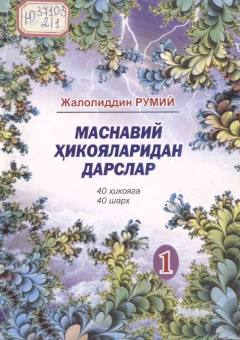

MHJaloliddin Rumiyning 'Masnaviy' asaridan olingan ibratli hikoyalar va ularning chuqur sharhlari.
Ushbu kitob Jaloliddin Rumiyning mashhur 'Masnaviy' asaridan olingan 40 ta hikoya va ularning sharhlarini o'z ichiga oladi. Asar o'quvchi tafakkurini kengaytirish va ma'naviy dunyoqarashini boyitish maqsadida Abdumurod Tilavov tomonidan nashrga tayyorlangan.